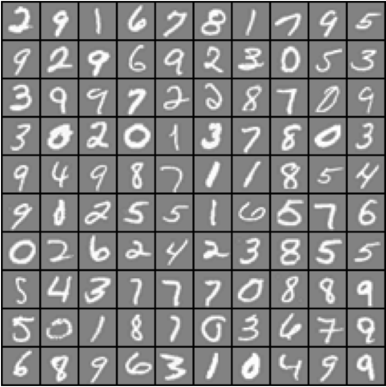
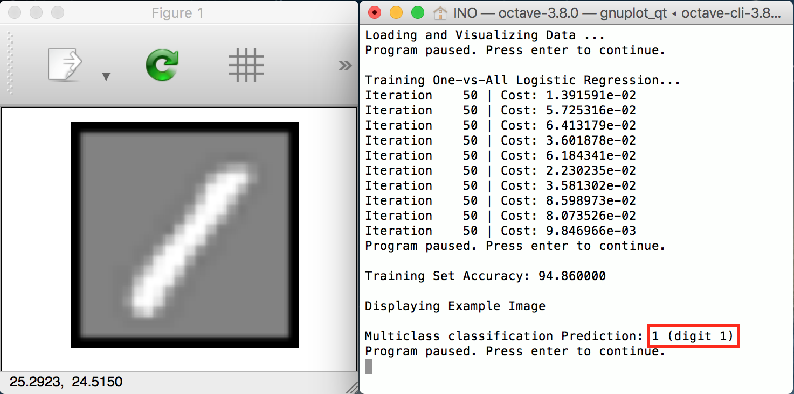
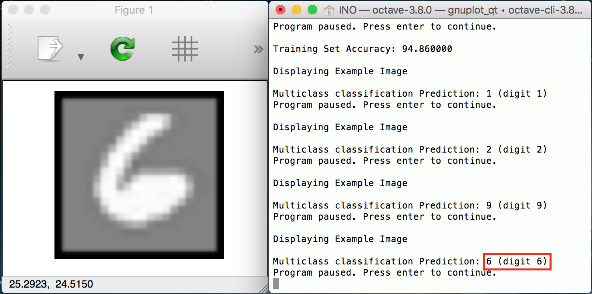
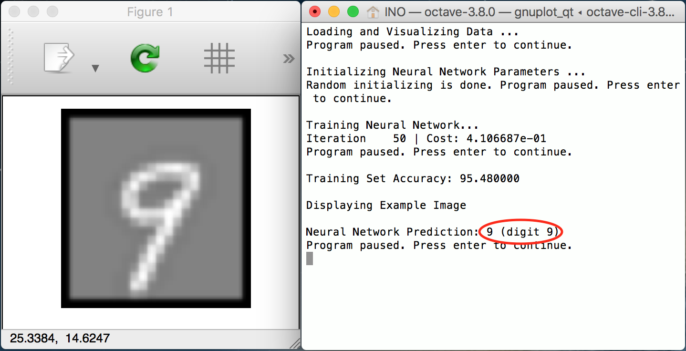
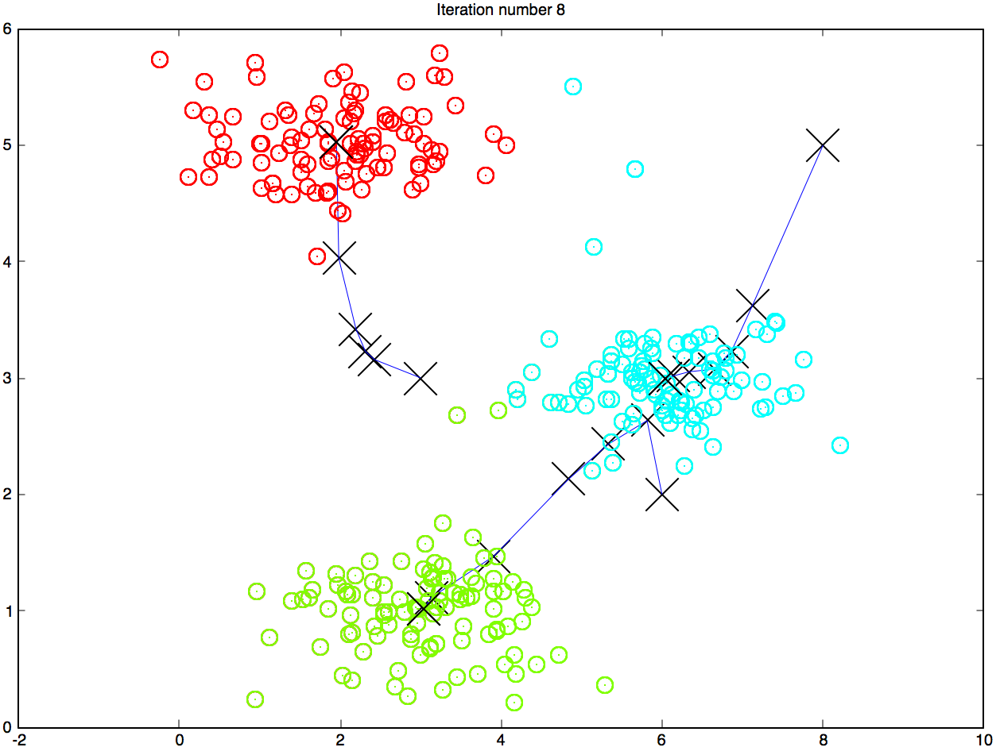
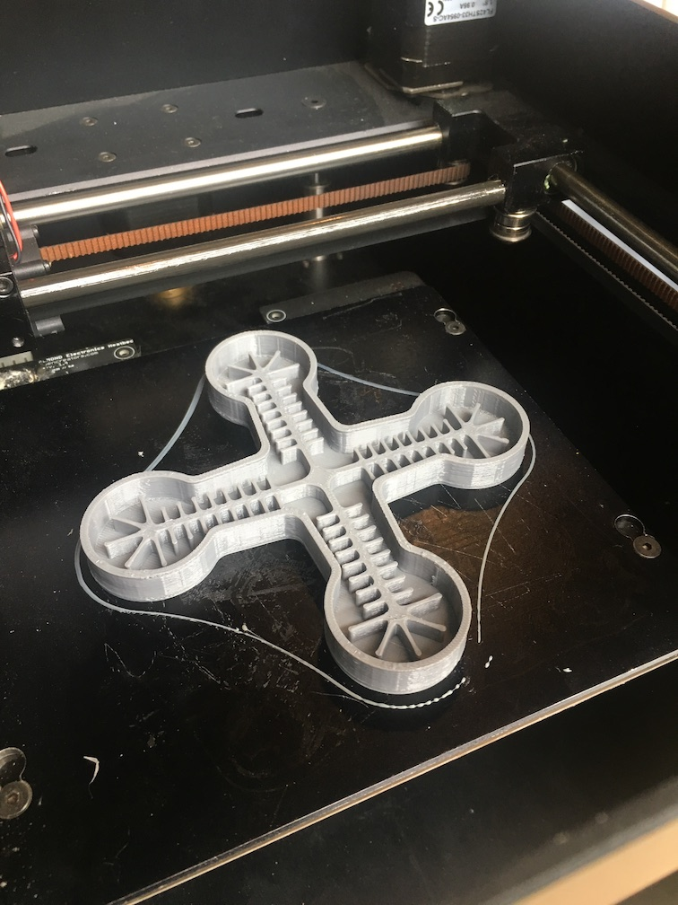
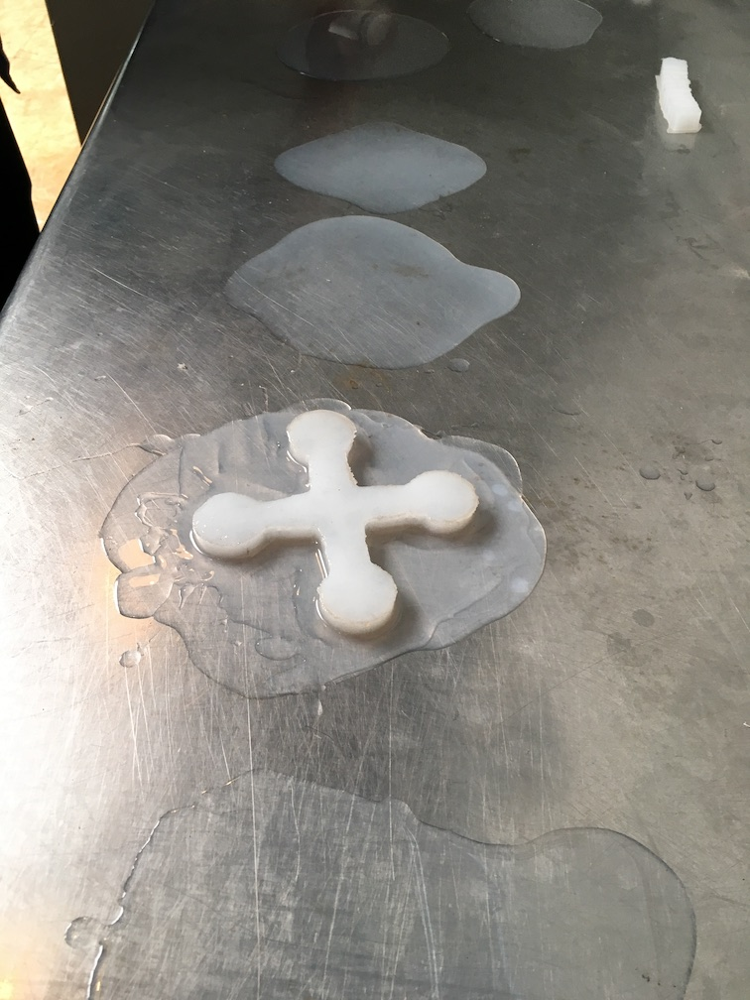
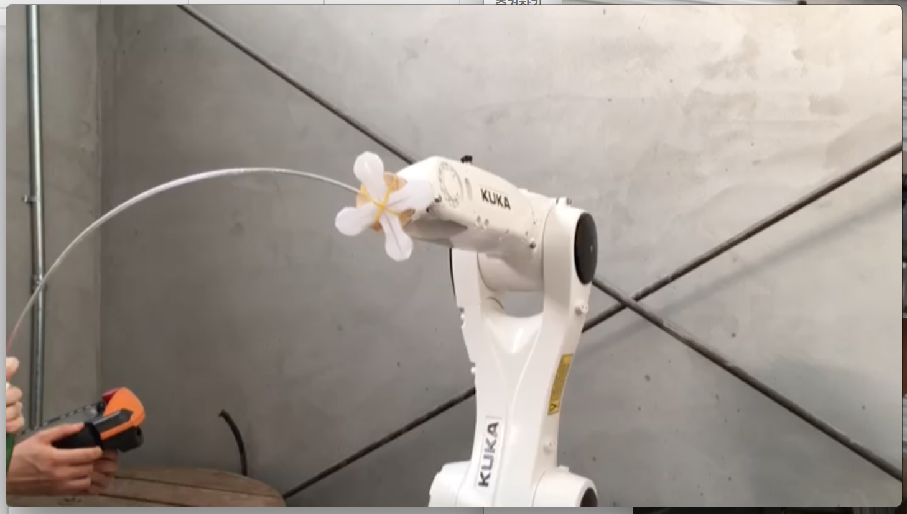
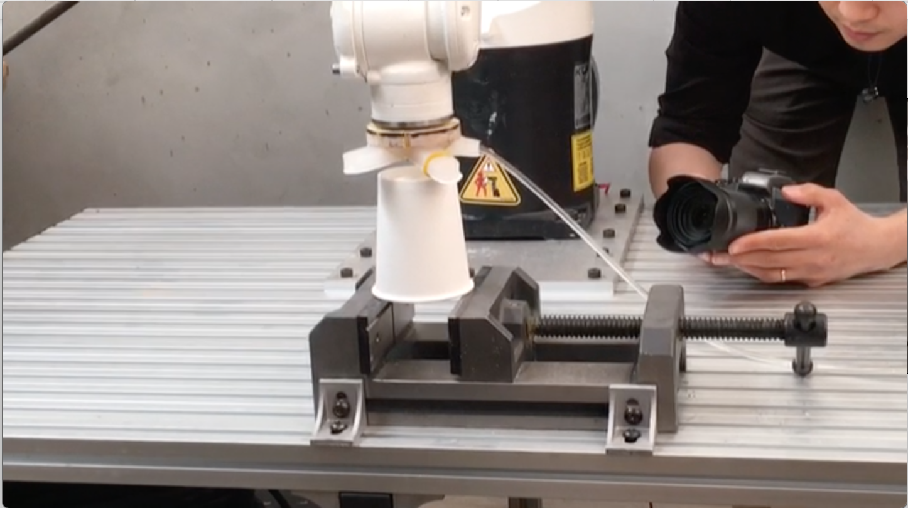

Portfolio
https://github.com/ino-jeong/Portfolio
정인오
inoh.jung@gmail.com / 010-9907-9386
1. OCR implementation, multi-class classification (Coursera)



- lrCostFunction.m
- oneVsAll.m
- predictOneVsAll.m
2. OCR implementation, neural-net (Coursera)


- https://github.com/ino-jeong/Portfolio/tree/master/OCR(neural_net)
- Test set accuracy : 95~96% (up to random initialization)
- Octave(추천) 또는 Matlab에서 main.m 실행
- 구현환경 : GNU Octave 3.8, Mac OS
- Coursera Machine Learning 과정 구현 과제
- Training set : 20 X 20 pixel, grayscale, 5000 examples of handwritten digits (1번과 동일 set)
- Model : Neural Net, 3 layer (1 hidden layer)
- Layer 구성 및 backpropagation 구현 :
- sigmoidGradient.m
- nnCostFunction.m
3. Image compression with K-means clustering (Coursera)

| ➡ |  |
Basic k-means clustering implementation (left : iteration 1 / right : after 8 iteration) |
- computeCentroids.m
- findClosestCentroids.m
- kMeansInitCentroids.m
4. Soft Robotic Gripper


- Robot arm : (Kuka) KR 6 R900 sixx KR AGILUS
- Soft robotic gripper :
- Material : Ecoflex 00-30 silicone
- Dimension : W 135mm x L 135mm x H 10 mm
- Air powered
- Mold : 3d printed (by ultimaker), pla
- Office paper used for inelastic side (inner side) constrainer